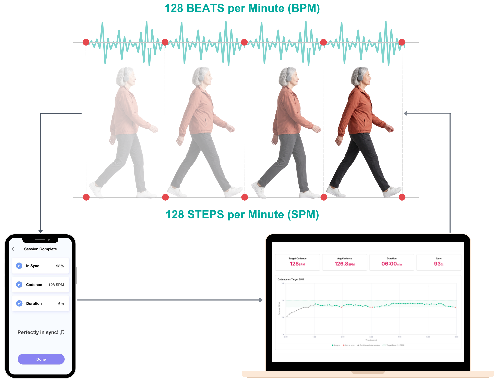
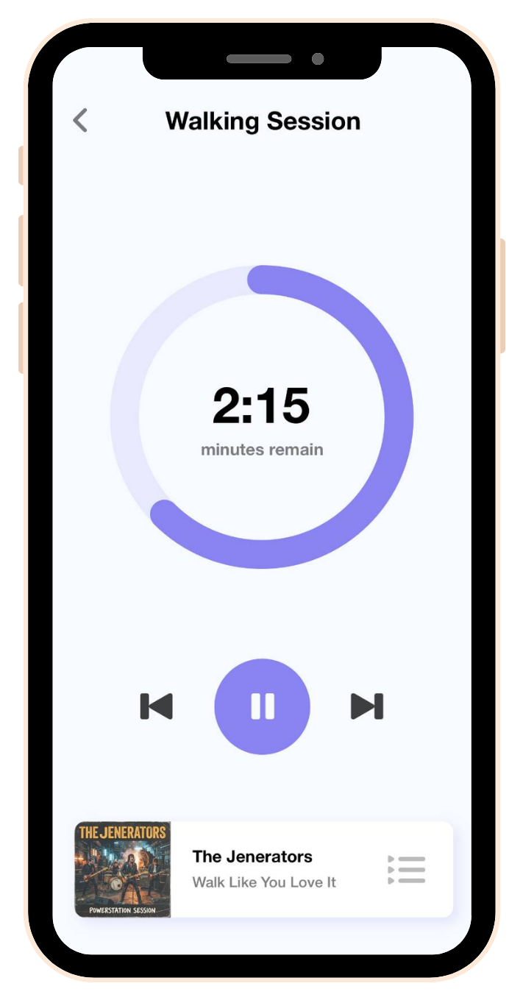

The walker
Steps sync to the music's beat without conscious effort. No wearables, just a phone.
Music-guided walking
Andante uses the rhythm of music people enjoy to set the walking pace. Steps lock onto the beat without effort, and as the tempo gradually rises, so does their pace. Walks feel easier, and people come back for the next one.
No wearables. No extra kit. Just a phone and headphones.
For physiotherapists, home care providers and clinics.

Steps sync to the music's beat without conscious effort. No wearables, just a phone.
Tracks cadence and sync in real time, and plays music matched to guide the pace.
Practitioners monitor progress remotely and adjust the programme without another visit.
The app
Simple enough to use alone
Built for one-tap use, with nothing to wear or pair, so clients can walk without you there.
A programme that keeps progressing
The tempo rises gradually and their steps follow, so the walk keeps getting a little brisker instead of plateauing.
Progress they can see
Results after every walk and simple graphs over the weeks, which is what keeps them coming back.

The dashboard
Know who needs you
Triage flags who is inactive, cutting walks short, losing sync, or ready for a challenge, so your time goes where it matters.
See what actually happened
Any walk in detail: cadence, sync, duration, which songs helped, plus your own notes.
Manage many clients remotely
Schedule sessions and adjust each person's programme from anywhere, without another visit.
Extend your programmes beyond the session and see who is keeping up.
Add a walking programme your carers can offer, with nothing to buy, charge or lose.
Run a study or pilot with a music-based walking programme delivered by phone, with adherence and gait data collected remotely.
Rhythmic Auditory Stimulation (RAS) gives the brain an external timing cue for each step. Hearing and movement are closely linked, so walking steadies without conscious effort.1
In a six-month randomised trial of 134 older adults at increased risk of falling, music-based multitask training cut the fall rate by 54% and fall risk by 39%.2
In healthy older adults, a tempo at or slightly above each person's own cadence worked best, while some fixed tempos made walking less stable.3
A meta-analysis found that listening to music during exercise lowers perceived effort.4 In a randomised trial in home-based cardiac rehabilitation, walking to beat-accentuated music nearly doubled weekly physical activity.5
ExWell Medical runs community-based medical exercise programmes for people living with chronic illness, and gave us access to participants for a research study.
Andante enables walkers to sync their steps to the music, using only a smartphone; this is called entrainment. All participants synchronised their steps to the beat.
75%
Participants loved it, and all of them said they would use it again.
Full results are being prepared for peer-reviewed publication.6
A multidisciplinary team of entrepreneurs, technologists and musicians, working with physiotherapists, clinicians, advisors and collaborators.

Founder
Serial music-tech founder. Brain health senior fellow.
Co-founder
Background across AI, technology and physiotherapy.